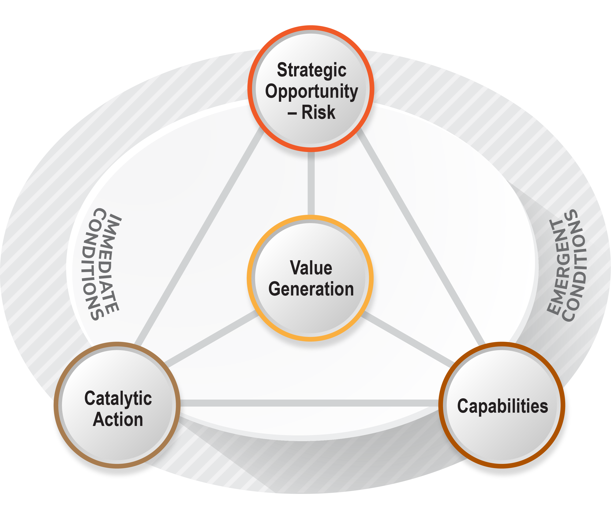

Most strategy processes begin with the assumption that the environment is knowable enough to plan around. Set direction. Build the plan. Execute. Review annually.
Strategy in Action begins from a different premise: that the operating environment is continuously shifting, that change is structural rather than episodic, and that what organisations need is not a better plan — but a better system for making consequential decisions continuously.
SiA does not replace strategic planning. It fundamentally changes its nature — from an event to a capability.
“The goal is not an organisation that has a strategy. It is an organisation that is strategic — continuously.”
Larry Quick · Co-founder, Resilient Futures
SiA was developed over 25 years working with Boards and Executives across Government, Health, Education, and peak bodies — organisations where the complexity of stakeholder maps, regulatory environments, and operational interdependencies makes conventional strategy not just insufficient, but actively misleading.
Each standard is distinct. Each is essential. And each is strengthened by its relationship to the others. The power of SiA lies not in any single standard, but in the rigour of maintaining all five simultaneously.
The starting point is always an honest reading of the real change landscape — not a SWOT analysis or a list of known risks, but a structured examination of the forces actually driving change and their implications for your organisation.
This standard builds a shared, evidence-based understanding across the leadership team of what is happening, what is driving it, and what the meaningful signals of change reveal about the trajectory ahead. It distinguishes between noise and signal. Between conditions that are transient and those that are structural.
What forces are driving change — and how do they interact?
What is the realistic trajectory for our operating environment?
Where are the interdependencies that our risk process is missing?
What does the change landscape mean specifically for us?
Conditions change what value an organisation must generate. This standard forces a clear-eyed conversation about what the organisation actually exists to do, for whom, and whether that value proposition is still relevant given current and emerging conditions.
It surfaces where value is being created, renewed, and quietly eroded. It is a test of strategic orientation, not a rebranding exercise — and it often surfaces uncomfortable truths about the gap between the value an organisation believes it provides and the value its stakeholders actually need.
Is the value we generate still the value that's needed?
Where is value being eroded without triggering an alarm?
What value must be renewed or reimagined given what conditions are telling us?
Where is our organisation at risk of optimising toward irrelevance?
With conditions and value clarity established, this standard surfaces the choices and conditions with the most significant implications for the organisation’s trajectory. This is distinct from a conventional risk register.
Strategic Opportunity-Risk integrates both sides of the same strategic question simultaneously: what could accelerate the organisation’s path, and what could derail it. It asks which conditions and choices are consequential enough to warrant deliberate Board-level attention — and which are being managed at the wrong level of the organisation.
What conditions could accelerate our path to relevance?
What are the strategic risks we are underweighting?
Which choices are consequential enough for Board attention?
What dynamics are we missing that our risk register cannot see?
A clear view of the strategic opportunity-risk landscape creates a different basis for capability investment decisions. This standard provides a deliberate view of the capabilities to build, acquire, or release — grounded in what conditions require, not what the organisation has historically invested in.
It asks what the organisation needs to be able to do that it cannot do today — and which capabilities are being over-invested in because they were valuable in conditions that no longer exist. Most organisations discover they are simultaneously under-building the capabilities they need and over-investing in those they no longer do.
What must we be able to do that we cannot do today?
Which capabilities are we over-investing in given what conditions now require?
What do we build, buy, borrow, or release?
Where is the capability gap widening silently?
The final standard translates strategic clarity into targeted action. But catalytic actions are not a project list — they are initiatives chosen specifically for their multi-pronged impact: each simultaneously builds capability, tests strategic assumptions, creates new value, and generates the feedback the organisation needs to keep adapting.
Catalytic actions move fast enough to generate real learning before conditions change again. They are the mechanism by which SiA keeps the organisation’s strategy alive, not as a document that is reviewed annually, but as a system that is continuously informed by what is actually happening.
Which actions will have multi-pronged strategic impact?
How fast can we generate real feedback from action?
What is each action teaching us about the real conditions?
How do we keep strategy moving at the pace of change?
Five Interconnected Standards · Not Sequential Steps · A Living System
The SiA Algorithm visualises how the five standards operate together. The power is not in any single standard but in the discipline of maintaining all five simultaneously — and in understanding how each standard informs and strengthens the others.
This is what makes SiA fundamentally different from frameworks that treat strategy as a linear process. In conditions of structural instability, linear processes create the illusion of control while conditions continue to shift beneath them.
SiA acknowledges the complexity and builds a system that is designed to operate within it — not to pretend it away.
The algorithm was first published in Disrupted (2015), co-authored by Larry Quick and David Platt. It has been refined through 10+ years of application with Boards and Executives across Australian organisations navigating genuine complexity.

“Strategy in Action has enabled me and my team to develop an approach to managing a complex set of conditions that are constantly changing. It has given us a shared language and a system we trust.”
CEO · Multinational Organisation
“We’re only a third of the way through the program, but it’s already having a profound impact on our organisation. The way our leadership team thinks about strategy has fundamentally shifted.”
CEO · Health and Human Services Organisation
Explore further
Why most strategic systems are built for a world that no longer exists — and what the consequences are.
Read the argument →From a half-day Strategic Fitness diagnostic to a full SiA engagement and embedded capability building.
See our services →Every engagement is led by the people with the deepest expertise — not delegated down after the pitch.
Meet the team →